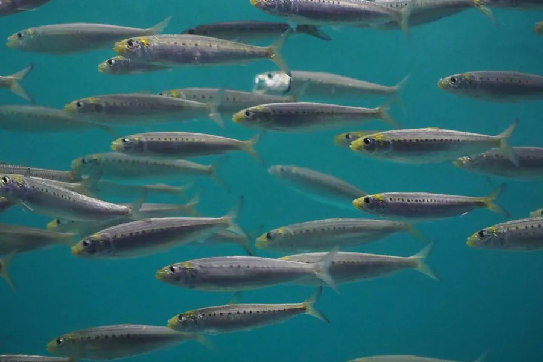

鱼类 · 动物界
沙丁鱼 Sardinops sagax

成群结队洄游的小型海洋鱼类，以浮游生物为食，数量庞大，是金枪鱼、海鸟和鲸类的重要饵料，也是世界重要渔获之一。
- 分类
- 门脊索动物门纲硬骨鱼纲目鲱形目科鲱科属拟沙丁鱼属
- 栖息环境
- 暖温带海域的上层水体，常结成大群随洋流洄游
- 地理分布
- 太平洋和印度洋的暖温带海域，以及东南大西洋，包括日本、澳大利亚、南美西岸和南非沿海
- 保护级别
- 暂无评估；中国未列入国家重点保护野生动物名录
物种志
沙丁鱼体呈长梭形、侧扁，头小，口端位。体色背部青绿或蓝灰，体侧银白，体侧中部常有一列黑色小斑点。成鱼体长一般 15–25 cm，最大约 30 cm，体重通常 50–100 g。
沙丁鱼分布于太平洋和印度洋的暖温带海域，以及东南大西洋，包括日本、朝鲜半岛、澳大利亚、南美西岸和南非沿海。它生活在上层水体，以庞大的鱼群形式洄游，滤食硅藻、桡足类等浮游生物。繁殖期随海域不同，雌鱼分批产卵，卵为浮性。沙丁鱼数量极大，是金枪鱼、海豚、海鸟和鲸类的重要饵料，南非沿海的“沙丁鱼大迁徙”就是著名的海洋奇观：数以亿计的沙丁鱼沿海岸向北迁移，吸引大量捕食者。它也是世界重要的渔业资源，渔业产量受海水温度变化影响而剧烈波动。目前它没有IUCN 的正式评估，中国未将其列入国家重点保护野生动物名录。
形态与习性
- 食性滤食硅藻、桡足类等浮游生物
- 体长一般 15–25 cm，最大约 30 cm
- 体重通常 50–100 g
- 繁殖随海域不同分批产卵，卵为浮性
- 群游以庞大的鱼群形式洄游，群体可达数亿尾
- 生态作用金枪鱼、海豚、海鸟和鲸类的重要饵料
趣味知识
- 沙丁鱼以庞大的鱼群闻名，南非沿海的“沙丁鱼大迁徙”是海洋奇观之一。
- 它们靠过滤海水中的浮游生物为生，是海洋食物链的重要中间环节。
- 沙丁鱼群会被金枪鱼、海豚、海鸟和鲸类联合围捕。